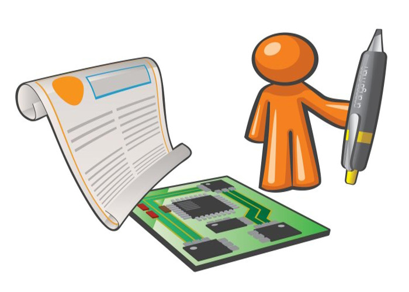

Extract from a post to gnusolidario forum of Luis Falcon
Recently I released to the public MEDILIG project v1.0 (MEDILIG Source at Sourceforge) under a combination of two licenses GPL and ODbL.
The current implementation is based on a combination of Microsoft SQL Server and Microsoft Access and there is minimal coding. Therefore a quick conclusion would be that this is a health software under a proprietary operating system. But that limits completely the horizon for this project. Let me throw here a few critical MEDILIG features for discussion.
I chose to implement the system under Microsoft Technology for two reasons
- Microsoft Technology is still very popular and there are millions of users that use a Windows PC.
- Microsoft SQL Server and Microsoft Access are also extremely popular. It is easy to maintain the server, it is easy to build a complex application in Access in days if not in a few weeks time! Leave aside all the toolkits for Microsoft Access and the great connectivity with other Microsoft Office applications. Since EMR/EHR applications need a lot of tuning and customization to cover the specific needs of the professional, I believe that this combination wins in speed as it concerns Rapid Application Development.
Conclusion: The main financial burden for the user is not the cost to run you application on a proprietary system; this may come free or with a very low cost for the user (e.g. included in the hardware price). It has to do with the the resources spent on building, modifying, updating, maintaining, expanding an application, and it also has to do with connectivity and interoperability issues.
- Now I will attempt to touch the last bit. Technical interoperability in HIT is only part of the problem. There is the semantics problem and the process/workflow dimension. You mentioned MEDICAL running in many different architectures. I consider the main point to be the architecture inside MEDICAL. If MEDICAL is based in a platform independent architecture, then that is the key issue for success. This is the main driving force behind MEDILIG
- MEDILIG is using an extensive database schema for continuous health care that follow standard clinical practice terms with an easy nomenclature for developers. This is the main asset of MEDILIG, this is where most of my effort was concentrated on. I will be glad if others start comparing MEDILIG schema with any other open EMR/EHR software schema to realize the differences in the domain architecture. By the way, I started this project because I could hardly see any extensive relational database schema for continuous care. The domain schema in many projects is either too complex to understand, or it is hidden, etc. Why have we abandoned so easily relational databases for an object oriented approach? Aren’t there so many legacy and proprietary systems that are based on RDBMS. How easily migration can be achieved?
- I am an ambassador of open architecture techniques and not open software or open OS. I want to solve a domain problem as quickly as possible and as cheap as possible. MEDILIG supports complete separation of the database schema from the presentation layer. I strongly support the independent development for the database layer. Has there been any agreement worldwide on a minimal database ER schema for XHR (EHR, EMR, CCR, PHR,….) ? Have they discussed extensively how important is for a health professional to keep his data on a privately own database?
- Finally a few lines about the presentation layer, I am skipping the business layer. The modern approach is that there is an integrated environment that provides you the GUI tools to build it and there is some way to connect your form/GUI with the database layer. MEDILIG is using Access only for demonstration purposes, you will see that the code is minimal. I believe that open health IT community of developers/user should head for open services. I have been inspired also from the Infopath Technology, particularly the idea that you can use the form with a set of data independent of the database server. I believe the most successful XHR application would be the one that offers the user the same flexibility as a word processor document or a spreadsheet. Many health professionals are still stuck with pen and paper. Perhaps the easy transition to the e-health era is to use electronic forms and documents on a tablet or on a PDA.